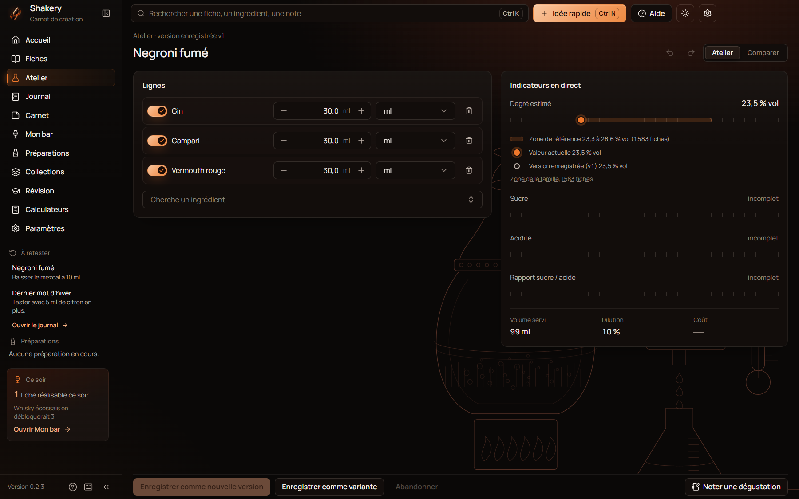

Shakery · refonte ergonomique · planche 04 sur 1024 novembre 2026
Atelier avec colonne « Dans le verre » et indicateurs regroupés
Avant

Ce qui change
- Une rangée d’en-têtes en petites capitales nomme les colonnes (Dans le verre, Ingrédient, Dose, Unité), pour que l’interrupteur se lise comme « cet ingrédient compte dans le verre ».
- Une phrase sous la liste explique que décocher « Dans le verre » sort l’ingrédient du calcul sans l’enlever de la recette.
- L’étiquette accessible de chaque interrupteur devient « Compter Gin dans le verre » au lieu de « Utiliser Gin », pour dire la même chose aux lecteurs d’écran.
- Les lignes ne sont plus des boîtes bordées et deviennent des rangées séparées par des filets, alignées sur une grille commune avec les en-têtes.
- Les trois jauges vides Sucre, Acidité et Rapport sucre / acide laissent place à un seul bloc sous un filet, avec un intitulé, la phrase « Il manque le sucre et l’acidité des trois ingrédients. Les jauges apparaîtront dès qu’ils seront renseignés. » et le lien « Compléter les ingrédients ».
- Les titres « Lignes » et « Indicateurs en direct » passent en petites capitales cuivre avec filet, et les deux panneaux gardent leur carte, puisque l’atelier reste un espace de travail.
- La barre du bas garde un seul bouton plein, Enregistrer comme nouvelle version, grisé tant que rien ne change, et ajoute la mention « Rien n’a changé depuis la v1. » pour expliquer cet état.
À trancher
- Faut-il garder les cartes autour des deux panneaux de l’atelier, ou les retirer comme sur la fiche ?
- L’intitulé « Dans le verre » te convient-il, ou préfères-tu « Dans le calcul » ?
- Le lien « Compléter les ingrédients » doit-il ouvrir la première fiche ingrédient incomplète, ou une liste de toutes celles à compléter ?
- « Enregistrer comme variante » reste actif même sans changement, comme dans l’appli actuelle. Faut-il le griser lui aussi tant que rien n’a changé ?